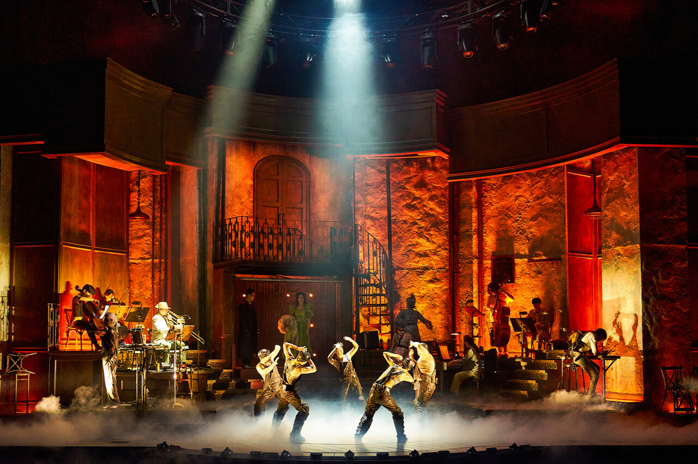

Artistic of musical
The first topic I'm going to deal with is light.There are two main types of lighting on stage, one of which is colorful lighting with a wide variety of colors.
This kind of lighting is used a lot in musical Lizzy. Lizzy is a very powerful rock musical so these colorful lighting used at concerts and festivals went quite well together. Color lighting is an indispensable element of such a rock musical in that it makes the character more noticeable by using contrasting colors, such as red and blue, and fills the stage with intense music. Then, do all musicals use only such colorful lighting? Not really.
In contrast to color lighting, another typical lighting used in stage is white light. Such lighting was mainly used in the musical about Gyeongjong. It leads the play with a single stage device and a calm piano melody, so that suits each character more with white light rather than colorful lighting. In addition, this is a historical musical set. As such, it can be seen that the light used is clearly different depending on the atmosphere of the musical.
The next thing to look at is the stage equipment. There are a wide variety of stage equipment, and among them, I would like to deal with the circular rotating stage and the juxtaposition stage that I saw most impressively.

The circular rotating stage is used in the musical Hadestown. Hadestown is a love story between Orpheus and Eurydice that derived from Greek Roman mythology. According to the story, Orpheus finds Eurydice and crosses the human world and the heavenly world, and in such a play that has to use a wide range of space, a circular rotating stage is used to implement this. By rotating the stage floor, the movement is further maximized when the actor runs or stands still on it, enabling more fluid and colorful acting in a limited stage space.
The stage I was also interested in was the juxtaposition stage used in the play The Dresser. Unlike Hadestown, which expressed the movement of space by continuously changing one set, the juxtaposition stage is a stage that shows two stage devices together on one stage and expresses the change of the space only by the movement of the character.
The Dresser is a play about an old actor who goes on stage that may be the end of his life. As the actor is the main character, the stage equipment is divided into a backstage with a chairman's room and equipment, and a main stage shown when the actual performance is performed. When an actor plays a scene where a storm blows on the stage, it was impressive that it reveals a lot of invisible hard work that takes place behind the stage for one scene, such as operating a strong fan and tapping the drum behind the stage.As such, the juxtaposition stage can be seen as an excellent stage for directing one scene from different perspectives.